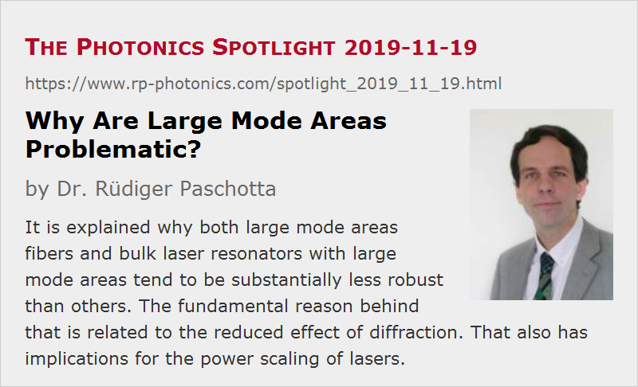

Why Are Large Mode Areas Problematic?
Posted on 2019-11-19 as a part of the Photonics Spotlight (available as e-mail newsletter!)
Permanent link: https://www.rp-photonics.com/spotlight_2019_11_19.html
Author: Dr. Rüdiger Paschotta, RP Photonics Consulting GmbH
Abstract: It is explained why both large mode areas fibers and bulk laser resonators with large mode areas tend to be substantially less robust than others. The fundamental reason behind that is related to the reduced effect of diffraction. That also has implications for the power scaling of lasers.

There are certain typical cases where we need to use modes with a relatively large mode area:
- In fiber optics, we often need to avoid excessive optical intensities in order to prevent damage or disturbing nonlinear effects.
- In laser resonators, we need large mode areas in order to maintain a high beam quality in high-power lasers, where the beam diameter needs to be relatively large.
Although the details of the physical effects determining the mode sizes in fibers and bulk laser resonators are quite different, a common experience is that devices with large mode areas tend to be less robust than others:
- Large mode area fibers exhibit substantial bend losses even for quite moderate bending. There may be even effects of micro-bends which can be difficult to suppress.
- Large mode area laser resonators are quite sensitive to influences like misalignment of laser mirrors, thermal lensing and any optical aberrations.
There has been a lot of work aiming at resolving such kind of trade-offs, but only with quite limited success. This is because the sensitivity of large modes of waveguides or resonators is high due to a relatively simple fundamental reason, which I explain in the following:
- A fiber (or waveguide) mode involves a balance between two counteracting effects: diffraction tends to enlarge the beam cross-section, while the refractive index profile provides a focusing effect. Similarly, in a bulk laser resonator we have diffraction combined with focusing effects in isolated optical elements, such as curved laser mirrors, and to some extent thermal lensing.
- If the mode area is increased, diffraction inevitably gets weaker. That means that the applied focusing effects also need to be made correspondingly weaker – for example, by using a refractive index profile with low index contrast in a fiber, or by using only weekly curved laser mirrors.
- Now we see that large modes are based on the balance of two quite weak counteracting effects. That implies that any additional effects can easily become substantial – for example, bending of a fiber, misalignment of laser mirrors or any optical aberrations. In contrast, the guided mode of a standard single-mode fiber experiences strongly fraction and refractive index confinement, so that any other effects like bending cannot have much impact on the mode.
For those fundamental reasons, there has been only moderate success in terms of increased mode areas in recent years. One can make single-mode fibers with mode areas of a few thousand micrometers squared, but not much more, since the explained problems would become excessive. Similarly, mode areas of laser resonators cannot be arbitrarily extended.
Well, it does help to increase the resonator length, because that strengthens the effect of diffraction, but there are obviously practical limits to that. You may have noticed that high-power lasers, particularly those with high beam quality, require relatively long resonators. Here, it would be wrong to believe that the long length is behind the substantial alignment sensitivity; instead, things would get even worse when trying to make the resonator short (as needed e.g. for obtaining short pulse durations with Q switching).
Large Modes “See” More of Phase Profiles
There is actually another aspect to consider related to the sensitivity of large modes. For example, a focusing effect with a certain focal length can be described with a quadratic transverse phase change profile. Clearly, such a phase change will be more relevant to a large mode, simply because it “sees” more of the phase variation. Similarly, misalignment of a laser mirror can be described with a phase change which varies linearly e.g. with the x coordinate; the phase variation across a large beam is obviously larger than for a tightly focused beam.
Power Scaling is Limited by Resonator Properties
Based on these considerations, one can see that there is a fundamental limit to the power scalability of both fiber lasers and bulk lasers, as long as we require large modes for high beam quality. Although thin-disk lasers, for example, with impressive performance, with many kilowatts of output power combined with excellent beam quality, the limiting effects of laser resonators are already felt. So it is not only a matter of developing even better thin-disk laser heads; the fundamental limits of resonators remain, and there is unfortunately little which we can do about that. For even higher powers with high beam quality, one may then have to go for beam combining with multiple lasers.
This article is a posting of the Photonics Spotlight, authored by Dr. Rüdiger Paschotta. You may link to this page and cite it, because its location is permanent. See also the RP Photonics Encyclopedia.
Note that you can also receive the articles in the form of a newsletter or with an RSS feed.
Questions and Comments from Users
Here you can submit questions and comments. As far as they get accepted by the author, they will appear above this paragraph together with the author’s answer. The author will decide on acceptance based on certain criteria. Essentially, the issue must be of sufficiently broad interest.
Please do not enter personal data here; we would otherwise delete it soon. (See also our privacy declaration.) If you wish to receive personal feedback or consultancy from the author, please contact him e.g. via e-mail.
By submitting the information, you give your consent to the potential publication of your inputs on our website according to our rules. (If you later retract your consent, we will delete those inputs.) As your inputs are first reviewed by the author, they may be published with some delay.
|  |
If you like this page, please share the link with your friends and colleagues, e.g. via social media:
These sharing buttons are implemented in a privacy-friendly way!